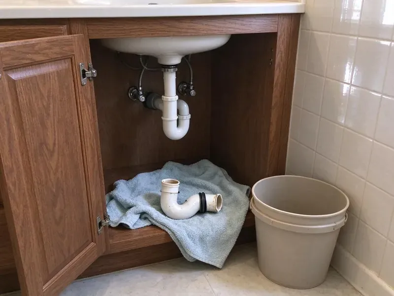

Well Pump Repair in Winooski, VT
Dry taps in Winooski, VT? CKV Plumbing tests the system in order and fixes what failed.
- Fast Well Testing
- Skilled Pump Techs
- Workmanship Warranty
- Experienced Well Techs

No water from your well? We get it running again in Winooski, VT.
No-water calls go to the front of the line.
Local Well Pump Repair in Winooski, VT
CKV Plumbing gets a failed well back online with as little downtime as possible for your Winooski home, whether the problem is a cheap pressure switch or a motor 200 feet down. Our technicians carry the tools to diagnose pumps, tanks and controls in one visit. The common parts are stocked.
Our expertise includes:
- Control box and splice repair
- Pressure tank and switch adjustments
- Pressure switch, control box and capacitor repair

Additional Plumbing Repair Services in Winooski, VT
We offer expert plumbing repair services across Winooski, VT to stop leaks, clear blockages, and keep every fixture working the way it should.


Customers
Why Choose CKV Plumbing for Well Pump Repair in Winooski, VT?
Well systems have more moving parts than most people realize, and CKV Plumbing knows how they fit together. The pump, the tank, the switch and the control box all have to agree. A repair that ignores one of them tends to fail again within months, usually on the hottest week of the year. Systems, not parts.
- Quality Pump Makers, We install pumps and motors with strong warranties and local parts support.
- Quality Components, We use heavy-duty replacement parts that hold up as long as the originals.
- Priority Dispatch, No-water calls go to the top of the schedule, because a home cannot run without water.
Citywide Coverage
Our plumbers cover the outlying parts of Winooski where homes rely on private wells. Rural lots, horse properties and hillside homes are all familiar territory.
Experienced Team
Each technician at CKV Plumbing trains on Franklin Electric, Grundfos and Sta-Rite equipment, with plenty of hands-on time in Vermont wells. That background makes for efficient repairs for Winooski customers.
Safety-First Approach
Repairs follow industry practice and Vermont plumbing rules. We protect the house and the crew on every job.
Trusted Certified Winooski Plumbing Services Professionals
At CKV Plumbing, we take pride in licensed, certified plumbing services throughout Winooski, VT. Those papers on the wall mean something. Every repair, install and maintenance visit follows strict safety and quality rules, and the plumbers doing the work carry recognized industry credentials.
Call Us Now PHCC Plumbing Contractor Recognition
PHCC Plumbing Contractor Recognition Better Business Bureau (BBB) Accreditation
Better Business Bureau (BBB) Accreditation Angi Certified Pro
Angi Certified Pro ISO 9001 Quality Management Certification
ISO 9001 Quality Management CertificationWell System Repair Work in Winooski, VT
Jet Pump System Repair in Winooski, VT
Jet pumps sit above ground and pull water up through a suction line with an ejector. Air leaks on the suction side cause most failures. CKV Plumbing checks the foot valve, the ejector nozzle and every suction fitting, then reprimes the pump and watches it reach cut-out pressure. Nonstop running without pressure usually means lost prime or an air leak.

Submersible Well Pump Repair in Winooski
Submersible pumps hang inside the well casing on drop pipe, often 100 feet or more below the wellhead. The usual signs are no water at all, weak pressure or a hum with no flow. We test the motor from the surface first. If it has to come up, a pump hoist lifts the pipe safely, and we replace the burned motor, worn impellers or a bad check valve before setting it back.
No-Water Emergency Repair in Winooski
A dead pump leaves the house without toilets, showers or drinking water. CKV Plumbing answers emergency well pump calls throughout Winooski and nearby areas ahead of scheduled jobs. The technician checks power and the switch first. Those two items fix a surprising share of no-water calls without anyone having to touch the pump hanging down in the well.
Emergency Well Pump Repair in Winooski
No water at all means a household on hold. CKV Plumbing handles emergency well pump calls in Winooski ahead of routine work. The technician arrives with a pressure gauge, an amp clamp and the common switches, capacitors and relays, which covers a good share of no-water calls on the first trip. A full pump swap takes longer.
Well Pump Diagnostic Services in Winooski, VT
Voltage, amperage, pressure and flow rate tell us most of what is happening down the well without pulling a single length of pipe. High amp draw points to a weak motor. A clogged intake or a dropping water level shows up as low flow with normal amps, and that changes the repair entirely. Testing first saves a pull.
Above-Ground Jet Pump Repair in Winooski
Lost prime is the number one jet pump complaint. These pumps can also leak at the shaft seal or wear out an impeller. We reprime the pump, replace the seal and check the foot valve and suction line for leaks, since one tiny air leak will undo the whole repair. Everything is above ground.
Well Pump Electrical Troubleshooting in Winooski, VT
Electrical faults cause a big share of well calls, from a tripped breaker to a burned contact in the pressure switch. After that, we look at the capacitor and relay in the control box. Our technicians test circuits with the power locked out. All wiring and splices meet Vermont electrical code before power goes back on.

Pressure Switch Replacement in Winooski
The pressure switch tells the pump when to start and stop. Most switches fail from pitted contacts, a plugged sensing tube or insects in the housing. We replace the switch, clean or replace the tube and set the cut-in and cut-out pressures to match your tank, typically 40 and 60 psi. One of the cheaper well repairs.
Well Pump Repair Nearby in Winooski, VT
Being close to Winooski means CKV Plumbing can reach your well quickly. Local water conditions and their effect on pumps are familiar to us.
Finding well pump repair near me can be tough in rural areas, since many plumbers do not work on wells at all. CKV Plumbing owns the hoist and the test gear to pull and set pumps. We bring that to homes across the area.
CKV Plumbing at a Glance
- Licensed and insured plumbers serving Winooski, VT
- 24/7 emergency service with same-day scheduling
- Upfront, flat-rate pricing before work begins
- 4.8-star rated by 553+ Vermont customers
Winooski Map
Winooski Information
- Population
- 8,251
- Area codes
- Local
- Service area
- Winooski and communities within 40 miles
- Nearby
- Burlington, Essex Junction, South Burlington, Shelburne
Steady well pressure matters for homes in Winooski, VT that are not on city water. Groundwater levels change, and the pump has to keep up.
Expert Services
Call CKV Plumbing for honest, reliable plumbing from people who know the trade in Winooski, VT.
Our Specialized Plumbing Services in Winooski, VT
At CKV Plumbing, we handle the full list of plumbing services across Winooski, VT. We go from leak detection all the way to full system installations, for homes and commercial buildings, and we do it quickly at a fair price. Here are the core services we offer:


How a Well Pump Repair Visit Works in Winooski, VT
CKV Plumbing follows the same steps on every well call, from the first test to the last.
Call CKV Plumbing
Call (802) 209-5139 to schedule well pump repair. A few quick questions, then a time on the schedule.
On-Site Testing
A technician arrives at your Winooski home and tests the well system. Test gear finds the real cause.
Price and Fix
We explain the problem and give you a clear price. With your approval, the repair begins.
Frequently Asked Questions About Well Pump Repair in Winooski
Minor repairs like a pressure switch or capacitor usually cost $150 to $500. Pressure tank replacement often runs $600 to $1,500, and replacing a deep submersible pump can range from $1,800 to $5,000 or more. The price comes first.
Resetting a breaker or checking the pressure switch is reasonable for a homeowner. Pulling a pump involves heavy pipe, high voltage and contamination risk, so leave that to a pro with a hoist.
Sputtering faucets and cloudy water are easy to spot. Low pressure, strange noises at the tank or a pump that will not shut off are others, and they usually get worse with time. Putting it off tends to raise the bill. Plenty of Winooski homes catch it early.
Once a year is a good rule. An annual check catches small problems before they turn into a dead pump.
A yearly inspection of the pump and the whole well system makes sense. Small problems get caught early in your Winooski, VT home, and that protects both the pump and the water.
Franklin Electric, Grundfos, Sta-Rite, Myers, Goulds and Little Giant are the brands we see most in Vermont, and CKV Plumbing repairs all of them. We know the specifics of each one.
A waterlogged pressure tank is the most common cause. Other causes include a dirty filter, a bad switch, a drop pipe leak or a lower water level. Each gets tested.
Yes, lightning can damage control boxes, capacitors, pressure switches and pump motors. Severe summer storms have brought major flooding to valley towns, overwhelming drainage and pushing water back through sewer lines. A surge arrestor at the well reduces the risk.
What People Are Saying About Our Plumbing Experts?

Rachel N.
Hard water was leaving white crust on every faucet and our dishwasher was struggling. The tech tested the water, recommended a softener sized for a family of five, and installed it with a bypass valve in one afternoon. The spots on our glasses are gone.
Water Softener · Essex Junction, VT
Mark T.
The floor drain in our office break room backed up every few weeks. The plumber ran a cable, then put a camera down and found roots at a joint about thirty feet out. Seeing it on the screen made the decision easy.
Drain Cleaning · St. Albans, VTMegan L.
Our upstairs tub drained so slowly that every shower turned into a bath. CKV Plumbing pulled a wad of hair out of the stopper and then snaked the line past the trap. Three months later it still drains fast.
Drain Cleaning · Essex Junction, VTGreg S.
I manage a small strip center with six tenants. CKV Plumbing handles our annual backflow testing and fixed a recurring clog in the shared sewer line that had been backing into the nail salon. Their reports come in clean and on time.
Commercial Plumbing · Middlebury, VT
Tyler J.
We bought a taller comfort height toilet for my dad, who just had knee surgery. The plumber pulled the old one, found the flange was cracked, and replaced it before setting the new bowl. Took about two hours.
Toilet Installation · South Burlington, VTLisa C.
Water was pouring out from under the washing machine on a holiday weekend. CKV Plumbing talked me through closing the valves over the phone and had a plumber at the house within ninety minutes. It was a burst fill hose.
Emergency Plumbing · Shelburne, VT